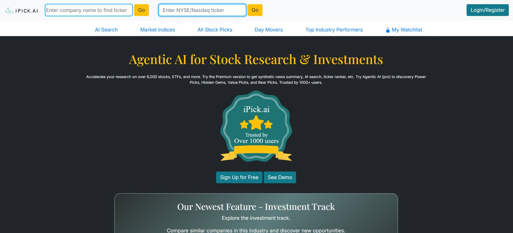
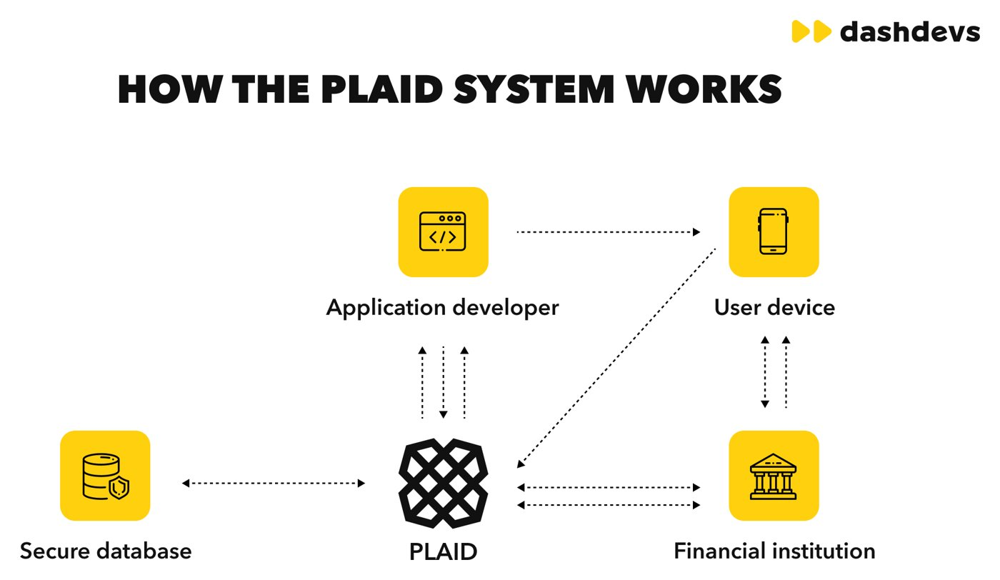
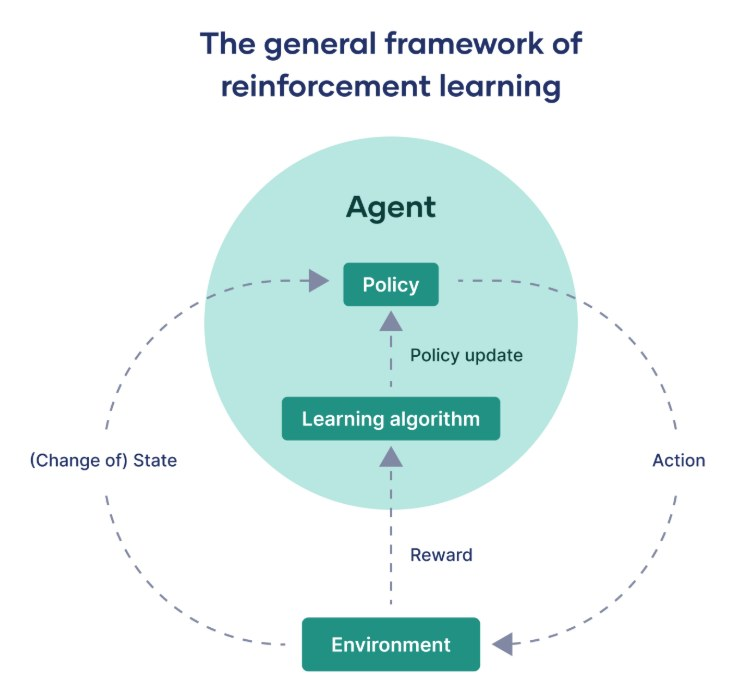

ipick is an ai stock research platform. this semester i'm on nexus, the student team building three new tools for it, and i've had my hands in all three.
the problem
ipick had ai agents picking stocks, but nothing backing up their picks. no portfolios, no recommendations either. that is what i am working on.
what i'm building
link your brokerage through plaid and ipick pulls in what you actually own.
price history from yfinance, cleaned up in postgresql, turned into features that predict returns.
an agent watches about 150 stocks, looks at the last month or two, and decides how much of each to hold. rebalances every two weeks.
portfolio analysis
plaid lets you connect your brokerage without ever giving us your password. it's a token handoff across four django endpoints, and i worked on all four.
page loads the plaid widget.
server grabs a short-lived link token so the login popup opens.
user logs in, and we swap their public token for a permanent one. that one never leaves the server.
pull stocks, etfs, and funds from every linked account into one list.


